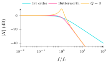

and
and  vs
vs  (Bode); each real pole bends the magnitude by −20 dB/decade and the phase by −90°, each zero the opposite; first-order RC sections give
(Bode); each real pole bends the magnitude by −20 dB/decade and the phase by −90°, each zero the opposite; first-order RC sections give  , second-order sections add resonance with
, second-order sections add resonance with  .
.Method (Bode asymptotes)
Factor (Bode 1940). Magnitude in dB is a sum: each factor is 0 dB below its corner and ±20 dB/dec above (exact error −3 dB at the corner). Phase: each factor contributes ±45° at its corner, ±90° asymptotically, transitions over one decade each side.
Standard filters
| filter | H(jω) | behaviour |
|---|---|---|
| RC low-pass | 1/(1 + jωRC) | −20 dB/dec above f_c |
| CR high-pass | jωRC/(1 + jωRC) | +20 dB/dec below f_c |
| RLC band-pass | 1/(1 + jQ(ω/ω₀ − ω₀/ω)) | peak at ω₀, bandwidth ω₀/Q |
| 2nd-order LP | ω₀²/(ω₀² − ω² + jωω₀/Q) | −40 dB/dec, peaking if Q>0.707 |
Butterworth () is maximally flat (Butterworth 1930).
Picture

Worked example
Anti-aliasing for a 48 kHz ADC wanting ≥ 40 dB rejection at 24 kHz with a passband to 4 kHz: first order gives only dB; 4th-order Butterworth with kHz gives dB at 24 kHz — close; use 5th order or oversampling.
Engineering applications
Audio equalisers, anti-aliasing and reconstruction filters, loop stability (gain/phase margins of op-amps and PLLs), EMI filters, the frequency response of photoreceivers and of interconnects.
Pitfall
dB of voltage ratios is , of power ratios ; the "−3 dB" frequency is where power halves, i.e. .